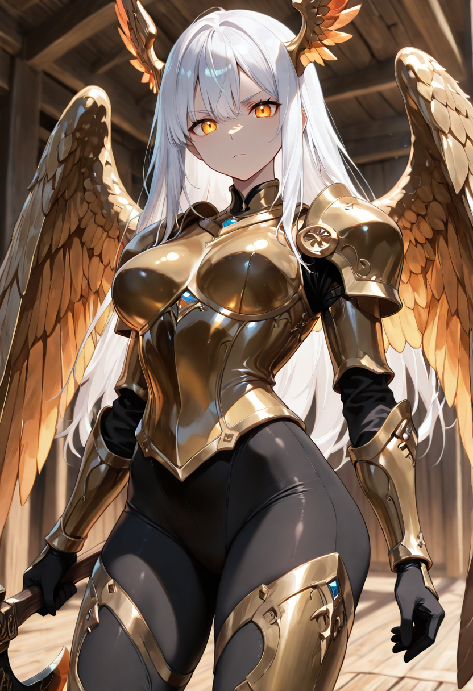
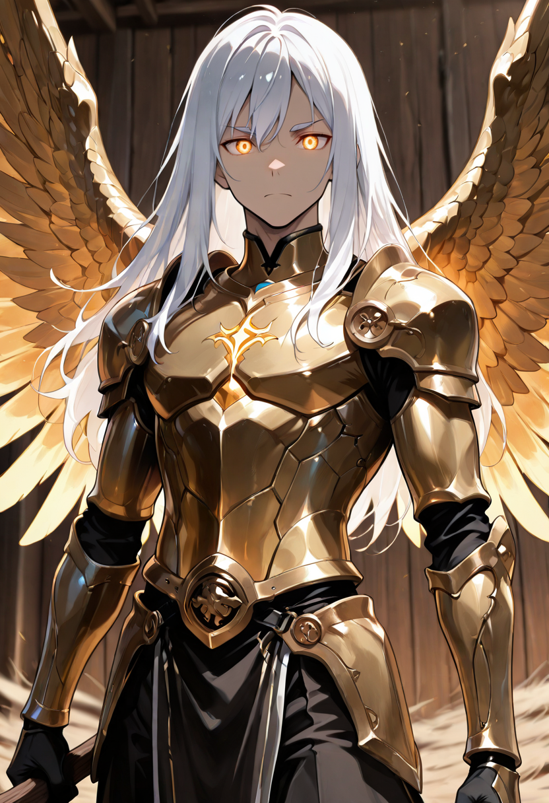
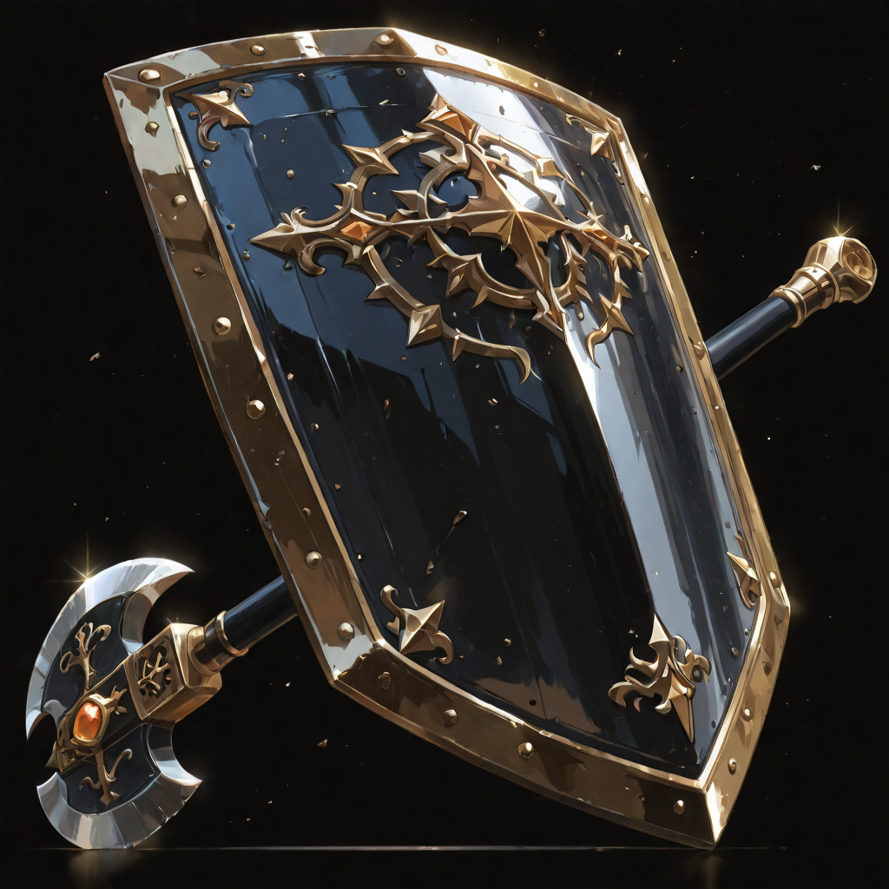
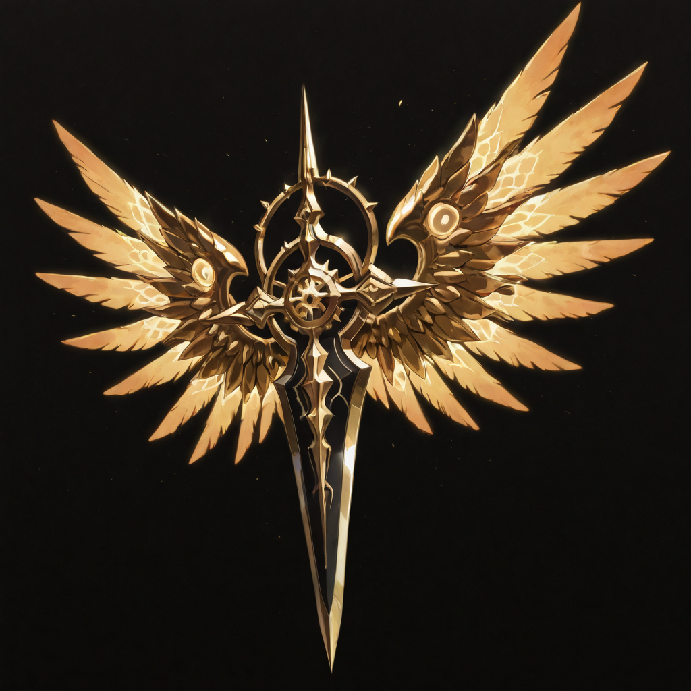
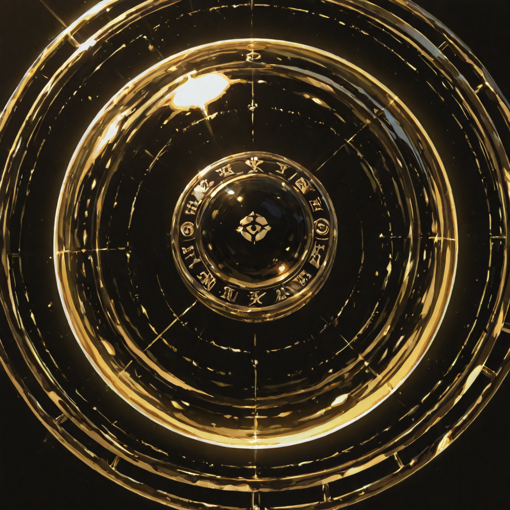
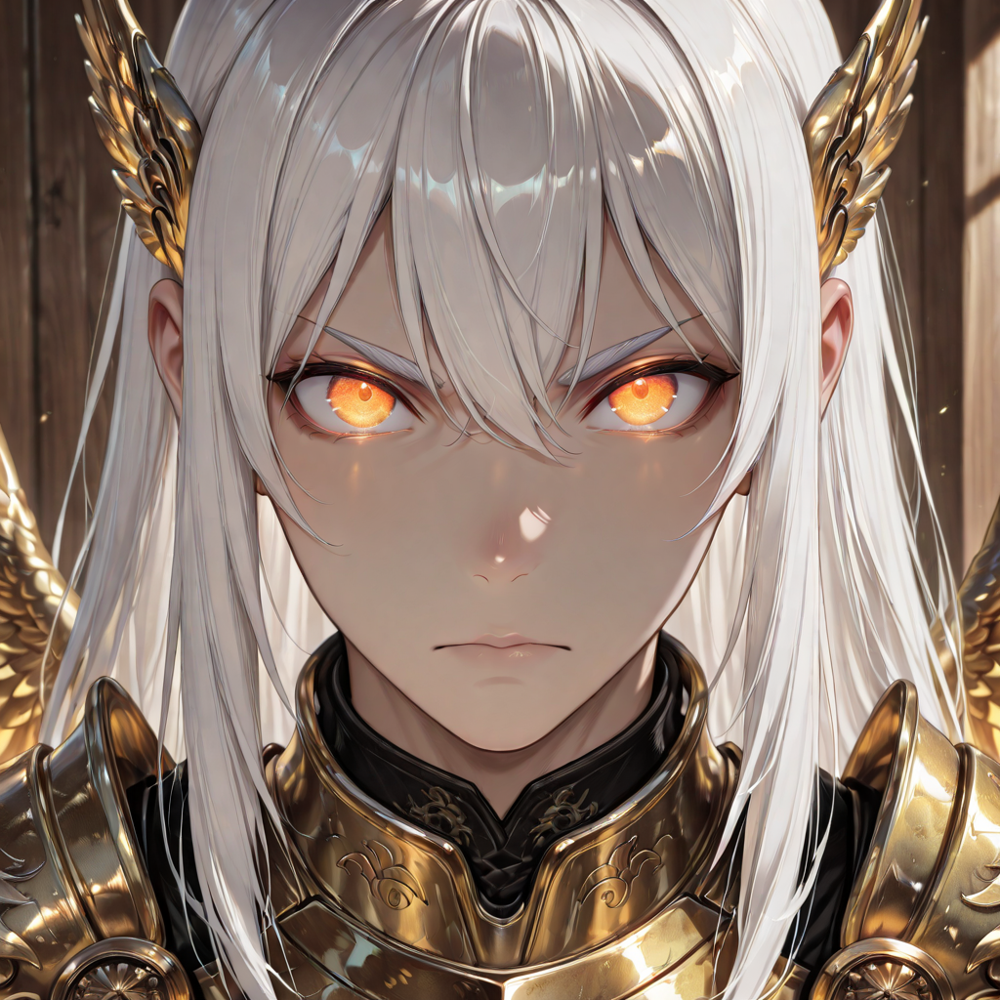

Malicott's Feather
Malicott herself descended and gave them a feather from her own wings. Not as ceremony , as gift. And with that feather came something no amount of training or dying could grant: the ability to truly fly. Not glide like the Thornguard, not vibrate between planes like the Ashblade. Fly.
The Iron Valkyrie traded their long weapons for colossal axes that they carry effortlessly in flight, their hands gripping handles worn smooth by battles they have not yet had. They are one of the few units in the Empire that must be addressed with something approaching reverence even by peers. Not because they demand it , they do not , but because everyone who looks at them remembers that they chose protection over freedom, every time, without exception.
On the battlefield, they fill the sky above their formation like a living ceiling. Enemies who target the ground must contend with the devastating axe-work descending from above. Their care is absolute. Their execution is swift. They are simultaneously the kindest and the most dangerous thing the Empire produces.
Tactical Data

Shield and Axe Bash
Base Attack
Aerial Strike
Active Skill
Aid the Fallen
PassiveGallery

